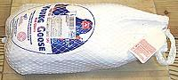
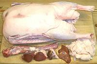
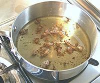
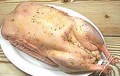
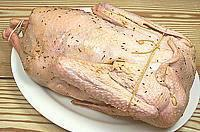
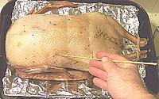
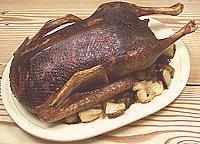

SAFARI
Users
- General & Historical
- Equipment You Will Need
- Planning & Buying
- Procedure - step by step
- Carving a Goose
- Safety Tips
General & Historical
Wild geese range throughout the northern hemisphere (southern hemisphere geese are a little different) and were domesticated in prehistoric times. Unlike domesticated turkeys and chickens though, they have not changed much from their wild form or behavior.
In Renaissance Europe geese were on the tables of the middle class at festival time while the aristocracy dined on peacock - until the turkey came from Mexico and rudely displaced the peacock. Roast goose, however, continued as a Christmas feature even unto this day.
Roasting a Goose is less complex than roasting a Turkey for a number of reasons:
- You're not going to have to decide whether fresh or frozen because you'll probably only be able to get frozen.
- You aren't going to have to ponder size so much because all the market will have is likely around 10 to 12 pounds.
- You're not going to have to make decisions about sex (the goose's, not your own - can't help you there) because they aren't labeled by gender.
- Salting and/or brining are not needed.
- Time and finish temperature aren't as critical because a goose isn't going to end up with cardboard breasts if you run 5 degrees over.
- Stuffing isn't as deep so it'll come up to temperature more with the rest of the goose, which is going to go hotter anyway.
- Most Americans have never tasted goose so they won't be able to criticize every detail.
- Goose roasts to a much darker shade so it's more likely to be even in color.
- You are less likely to be expected to produce the full dress American Thanksgiving experience with sides, gravy, trimmings and pie, so you have a lot more flexibility.
Equipment You Will Need
- An
Oven
with good temperature control and sufficient room for the goose and its roasting pan. - A
Roasting Pan
. Highly preferred are shallow pans fitted with a V-rack, and with convenient handles on the pan and the V-rack. These are readily available at prices from $15 to $150. Disposable aluminum pans are way too flimsy for even a duck - a disaster waiting to happen - and they have no rack so the goose will be swimming in grease. Aluminum Foil
, wide.Rubber Gloves
- these are for turning the goose over part way through roasting and removing it from the V-rack after roasting. Silicone Rubber oven gloves work fine, but I simply won't pay the price of those Orca things and they're rather stiff anyway. Get the thickest set of flock lined rubber dishwashing gloves they have at your local market in size "extra large". These will do just fine if you are organized and work efficiently.- A
Meat Thermometer
with a probe long enough to penetrate to the center of the goose. Highly recommended is one with a probe on a long cable so you can monitor temperature without opening the oven. Kitchen Twine
and a trussing needle or other method of getting string through skin (Note-2).Bamboo Skewers
.- A
Basting Device
, preferably a good quality bulb baster or some sort of shallow scoop that can get down into the roasting pan with V-rack in place.
Planning & Buying
Buying:
You'll probably be buying your goose frozen. There just isn't a steady enough demand for goose to allow stores to stock fresh ones, and even frozen ones are scarce except around Christmas. Buy about 2 days in advance and stash it in the fridge. It'll be partially thawed by time you are ready to cook it. See that the factory vacuum package is fully intact so it won't leak on other stuff - if not, contain it.Roasting vegetables in the pan:
many traditional recipes call for adding potatoes, apples and such to the roasting pan at a particular point. I find this to be less than satisfactory for several reasons.- You must remove the goose from the oven, remove the rack and pour out the collected fat, then return some of it, add the vegetables, replace the goose and put it back in the oven. Aside from the cooling that happens here the vegetables will cause a flat spot in the temperature rise until they are up to temperature - and there's the clear danger of handling all that hot oil.
- A lot more fat will exude from the goose. The vegetables tend to pick up char from the bottom of the pan and become saturated with goose grease. This is much less desirable for today's information workers than it was for hard working peasant farmers.
- Timing is hard to judge. If you're an experienced farm cook who cooks goose in your own oven often enough to get the hang of it, maybe it's a good idea. For someone who cooks a couple geese in a lifetime it's not so good an idea. Use your bulb baster to bring out enough goose grease to roast these items in their own pan.
Stuffing or Dressing?
Dressing is the same as stuffing but cooked separately in a casserole with some flavorful stock added to make up for not being inside the bird.Unlike turkey goose is still usually stuffed. It's not such a great distance to the center so the stuffing will follow the meat more closely in temperature, the goose is going to a higher temperature than turkey anyway, and goose adds more flavor to the stuffing than turkey does.
Procedure
|
Click Image to Enlarge







|
|
Notes
-
Thawing: Yes, all the books, recipes, cooking articles and
"experts" scream
"Never Do This!"
, but the rabid bacteriophobes at the USDA (U.S. Department of Agriculture) say it's OK. Actual research has proven a cool countertop or cold running water thaw is less risky (on multiple counts) than thawing in the refrigerator, and far easier to time. The "Never Do This" recommendation is based on an FDA decree that has no research whatever to support it. If you find you just won't be ready by time it's thawed, put it back in the fridge before it is completely thawed, making sure it can't touch or drip in anything. - Lacing: is supposed to be done with a trussing needle but I didn't have one, so I used a splicing fid (a rope working tool) left from my sailing days. Worked just fine.
- Finish Temperature: Yes all your thermometers and many of your books and recipes say fowl must go to 180°F/82°C - based on an FDA recommendation. That recommendation was reviewed in 2006 and the FDA could find no supporting data whatever, not even scribbled notes, to support the 180°F recommendation and now agrees with the USDA that 165°F/74°C is perfectly safe.
- Stuffing Temperature: If it just isn't going to make it before the goose is overcooked, pull the goose, scoop out the stuffing, put it in a casserole and put it back in the oven while the goose rests.
- Rubber Glove Removal: To get those slippery gloves off just wash your hands with cleanser with the gloves on, then they won't be slippery, will pull right off and won't need further washing.
Carving your Goose
Perhaps you're one of those risk takers who carves turkeys at the table - well don't try that with a goose. Not unless a comedy routine is what you're aiming for.
But a goose should carve similar to a turkey, right? Wrong! The tool you need to disassemble a goose is not a carving knife but a sharp, maneuverable boning knife, and the whole bird is slipperier than a greased pig. One of those 2 pronged carving forks can help but the bird is still going to squirm and try to escape.
As with a turkey you start by bending back the thighs and wings so you can cut the joints apart. The joints are much tighter than on a turkey and take some effort to dislodge.
When cutting from the body the meat clings hard to the bones and the bone structure is convoluted and the whole thing is dark which makes it more difficult to see what you're doing. Use a small knife, not a carving knife.
Once you've disassembled your goose you can slice the breasts and other large chunks. The flesh is firm and will slice quite thin without breaking up, but a santoku is more appropriate than the long slicing knife you'd use for turkey. The first joint of the wing is actually larger than the drumstick but the drumsticks have less of a tendon problem than with turkey.
Once you've got it all sliced up, arrange the slices on a platter and serve.
Safety Tips
- Be prepared to handle dangerous quantities of very hot oil. The roasting pan must always be handled with great care lest it spill. Safe and proper basting tools should be used.
- Do not refrigerate a goose after stuffing, cook immediately.
- Observe cooking temperatures given above and take them seriously. Harmful bacteria multiply very rapidly at temperatures between 40°F and 140°F, a range your goose will be in for most of the cooking time.
- When handling an uncooked goose, do not handle any other food until you have cleaned up with soap and water.
- Do not let an uncooked goose come in contact with any other food.
- Immediately upon moving an uncooked goose, scrub the cutting board or surfaces it was touching with soap and water and preferably a little bleach. I generally scrub everything with cleanser which releases bleach in the process.
- The USDA recommends that leftovers should be in the refrigerator within 2 hours of coming out of the oven. In general that's just not going to happen but try to keep close. If there are large amounts store in multiple smaller batches so the temperature will drop quickly.